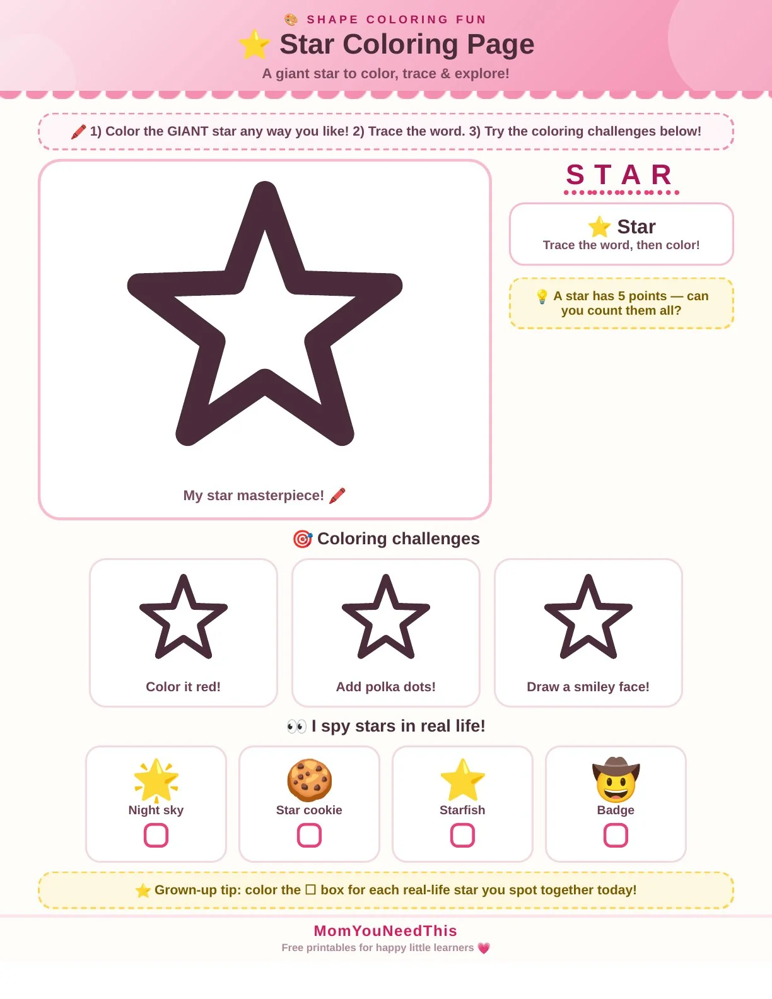
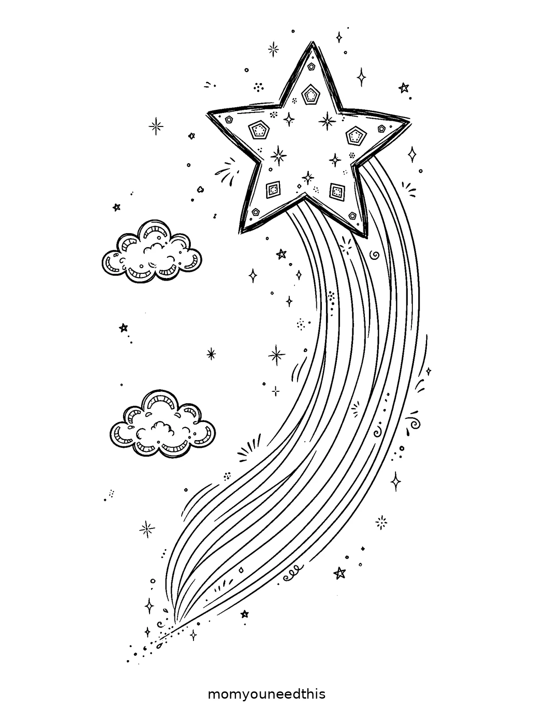
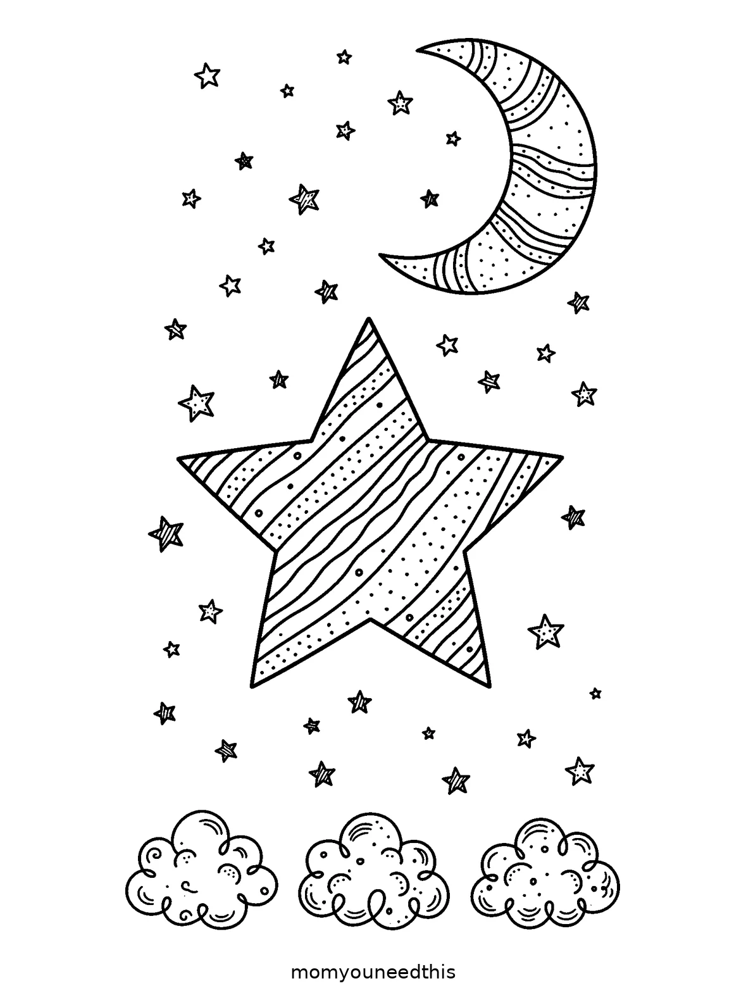
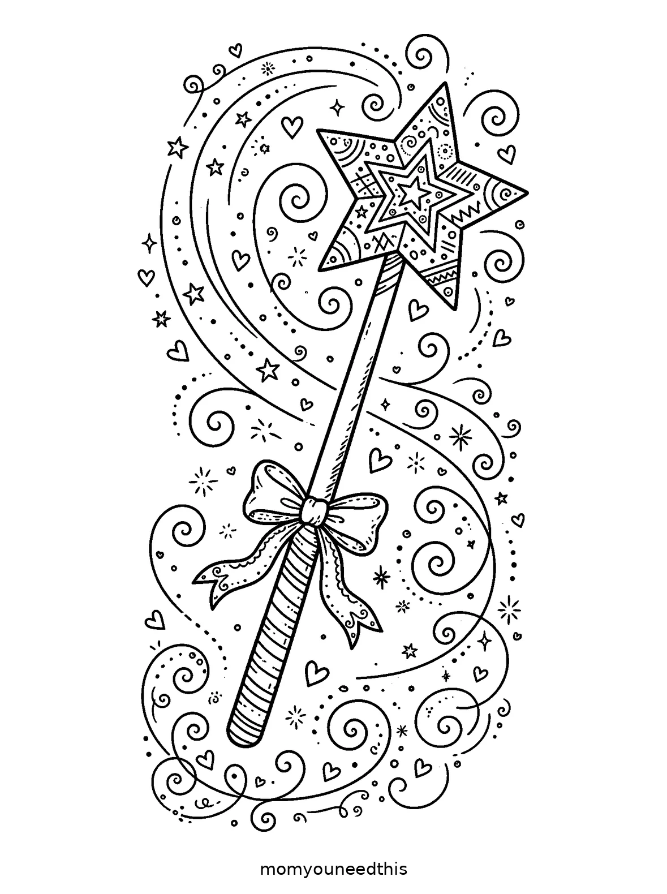

Star Coloring Pages For Kids Color Pointy Twinkling Stars
Twinkle, twinkle! Stars are a favorite shape for little kids. These star coloring pages feature big bold stars — perfect for practicing coloring while learning a shape that lights up the night sky.
Quick Answer
These free star coloring pages let toddlers and preschoolers color big, bold stars in fun designs. From simple five-pointed stars to twinkling night-sky scenes, each page makes shape practice magical. Download and print at home with no signup needed. Coloring stars builds fine motor control and introduces one of children's favorite shapes through creative play.
At a Glance
- Ages: Toddlers and preschoolers
- Activity: Coloring big, bold stars and night-sky scenes
- Skills: Coloring control and shape practice
- Format: Printable coloring pages (PDF)
- Cost: Free, no signup
⭐ All About the Star
A star has 5 points that meet in the middle. Kids can spot stars in the night sky, on flags, in stickers, and on sheriff badges. Coloring stars helps little hands practice angled lines and points.

🖨️ Download Your Free Star Coloring Pages
Twinkling star designs ready for color! Print them out, grab the crayons — no signup needed.
⬇️ Download Free Printable 🖨️ Print(opens in new tab)🎁 Free printable for toddlers & preschoolers

🖨️ Download Your Free Shooting Star Coloring Page
A shooting star zooming across the sky with a long swirly trail! Print it out, grab the crayons — no signup needed.
⬇️ Download Free Printable 🖨️ Print(opens in new tab)🎁 Free printable for toddlers & preschoolers

🖨️ Download Your Free Night Sky Star Coloring Page
A giant patterned star shining under a crescent moon with puffy clouds! Print it out, grab the crayons — no signup needed.
⬇️ Download Free Printable 🖨️ Print(opens in new tab)🎁 Free printable for toddlers & preschoolers

🖨️ Download Your Free Star Wand Coloring Page
A magic wand with a big star tip, a ribbon bow and swirls of sparkles! Print it out, grab the crayons — no signup needed.
⬇️ Download Free Printable 🖨️ Print(opens in new tab)🎁 Free printable for toddlers & preschoolers
🔍 Star Hunt Around Your Home
Find the stars! Look at flags, stickers, star-shaped pasta, and cookie cutters. At bedtime, look out the window — can you spot real stars twinkling in the sky?
💡 Why Color Stars?
Stars are highly motivating for young children — they're exciting! That excitement keeps little hands coloring longer, which means more practice with fine motor control, grip, and staying inside the lines.
📚 Keep Exploring Shapes
Discover more free shape activities, printables, and learning ideas created for busy parents.
🎁 Back to Shape Coloring Pages